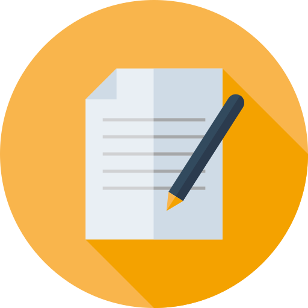

<div id="modal">
<h1>Roadmap Under Construction</h1>
<h2>We are working hard on creating this roadmap. Thank you for your patience.</h2>
<span ng-click="fmc.close()" class="glyphicon glyphicon-remove close-modal"></span>





<!-- <p>
<ul>
<li>Startups and founders are lost. They need a clear path and something to help keep them focused and on the right track.</li>
<li>Accelerators need their startups to succeed.</li>
<li>Accelerators need a better mechanism to track and assess progress toward goals.</li>
<li>Accelerators need a better way to provide simple accountability.</li>
<li>Accelerators need more effective coaching and learning (such as reduced time and improved focus).</li>
</ul>
</p>

<div class="row">

    <button class="cta-home" ui-sref="contact">Try For FREE</button>

</div> -->


</div>
